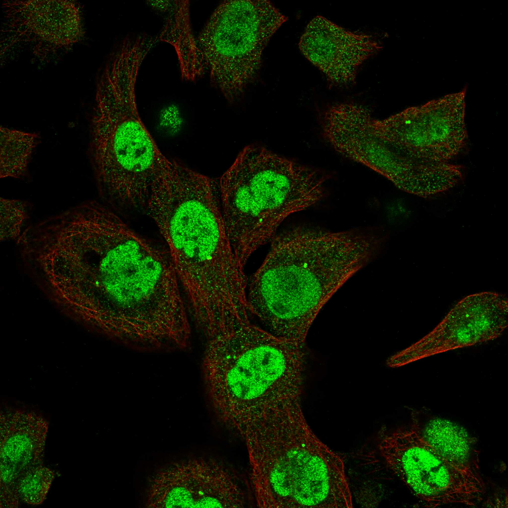
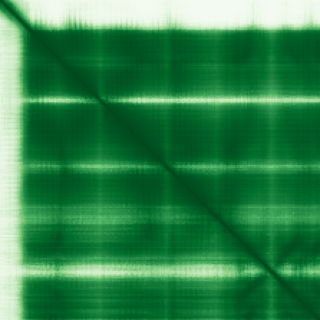

type: protein-evaluation gene: "GINS4" date: 2026-06-01 tags: [protein-scout, chromatin, evaluation] status: scored ---
GINS4 核蛋白评估报告
1. 基本信息
| 项目 | 内容 |
|---|---|
| 基因名 / 别名 | GINS4 / SLD5 |
| 蛋白全名 | DNA replication complex GINS protein SLD5 |
| 蛋白大小 | 223 aa / 26.0 kDa |
| UniProt ID | Q9BRT9 |
2. 评分总览
| 维度 | 得分 | 新权重 | 加权后 | 关键证据摘要 |
|---|---|---|---|---|
| 核定位特异性 | 7/10 | x4 | 28.0 | UniProt Nucleus; Chromosome; Cytoplasm, HPA Nucleoplasm + Centrosome |
| 蛋白大小 | 10/10 | x1 | 10.0 | 223 aa, 26.0 kDa，极小，优异 |
| 研究新颖性 | 8/10 | x5 | 40.0 | PubMed strict=23 (≤40 区间) |
| 三维结构 | 10/10 | x3 | 30.0 | PDB 10 entries, AF pLDDT 90.4, >90=81.2% |
| 调控结构域 | 8/10 | x2 | 16.0 | GINS complex (SLD5)，CMG 解旋酶核心组分 |
| PPI 网络 | 9/10 | x3 | 27.0 | STRING 全 MCM2-7/GINS1-3/CDC45 0.999 exp；IntAct 多条验证 |
| 加权总分 | 151/180** | |||
| 互证加分 | +1.0 | UniProt+HPA 一致 Nucleoplasm，CMG complex 完整 | ||
| 归一化总分 (÷1.83) | 82.5/100** |
3. 详细分析
3.1 核定位证据
| 来源 | 定位 | 可信度 |
|---|---|---|
| UniProt Subcellular Location | Nucleus (ECO:0000305); Chromosome (ECO:0000305); Cytoplasm (ECO:0000250) | 中（序列分析/同源推断） |
| GO-CC | nucleoplasm (TAS:Reactome), nucleus (IDA:ComplexPortal), CMG complex (IPI:ComplexPortal), GINS complex (IPI:ComplexPortal) | 高 |
| HPA IF | Nucleoplasm + Centrosome (Approved 可靠性) | 高 |
| Literature | GINS4 是 CMG (CDC45-MCM-GINS) 解旋酶核心组分，在 DNA 复制叉处与染色质结合 | 强 |
HPA IF 状态: IF available -- HPA 可靠性 Approved，定位 Nucleoplasm + Centrosome。

结论: GINS4 是 CMG 解旋酶的必需组分，核质定位明确。HPA 可靠性 Approved，Nucleoplasm 为主定位。虽 UniProt 标注为 sequence analysis 级别，但 GO-CC 和 ComplexPortal 提供多源实验支持（IPI/IDA）。
3.2 结构与数据源
| 指标 | 数值 |
|---|---|
| AlphaFold | AF-Q9BRT9-F1 |
| 平均 pLDDT | 90.4 |
| pLDDT >90 | 81.2% |
| pLDDT 70-90 | 10.3% |
| pLDDT <50 | 7.6% |
| PDB | 10 entries (2E9X 2.30A, 2EHO 3.00A, 2Q9Q 2.36A, 6XTX 3.29A EM, 6XTY 6.77A EM, 7PFO 3.20A EM, 7PLO 2.80A EM, 8B9D 3.40A EM, 8OK2 4.10A EM, 9E2Z 2.60A EM) |
AlphaFold 预测质量极高（pLDDT 90.4，>90 区域 81.2%）。PDB 10 个实验结构，涵盖 X-ray 晶体学和 Cryo-EM，均为全长（1-223 aa）在 GINS 或 CMG 复合体中共解析，分辨率达 2.30-2.80A。

| InterPro | Pfam |
|---|---|
| IPR021151 (GINS A domain), IPR036224 (GINS A-like superfamily), IPR008591 (GINS complex SLD5), IPR031633 (GINS SLD5 C-terminal), IPR038749 | PF05916 (GINS A), PF16922 (GINS SLD5 C) |
染色质调控潜力: GINS4 通过 CMG 解旋酶复合体直接作用于 DNA 复制叉，与染色质在 S 期紧密关联。复制压力响应中与染色质重塑间接相关。
3.3 研究现状
| 指标 | 数值 |
|---|---|
| PubMed strict (Title/Abstract) | 23 |
| PubMed broad | 51 |
| 别名 | SLD5（未用于 scoring） |
关键文献：
- PMID:17417653: GINS complex 功能与 CMG 解旋酶组装
- PMID:35585232: "Mechanism of DNA replication" -- CMG 解旋酶结构
- PMID:37018198: "GINS4 suppresses ferroptosis by antagonizing p53 acetylation with Snail." (PNAS, 2023) -- GINS4 非复制功能
- PMID:36345943: "Partial loss-of-function mutations in GINS4 lead to NK cell deficiency with neutropenia." (JCI Insight, 2022) -- 免疫缺陷表型
- PMID:40081544: "GINS4 silencing mediates hepatocellular cancer cell proliferation, cycle and ferroptosis through POLE2." (Cell Signal, 2025)
3.4 PPI 网络（三源综合）
| Partner | Source | Score/Evidence | Relevance |
|---|---|---|---|
| MCM2 | STRING | 0.999 (exp 0.997) | CMG 解旋酶核心 |
| MCM3 | STRING | 0.999 (exp 0.993) | CMG 解旋酶核心 |
| MCM4 | STRING | 0.999 (exp 0.992) | CMG 解旋酶核心 |
| MCM5 | STRING | 0.999 (exp 0.993) | CMG 解旋酶核心 |
| MCM6 | STRING | 0.999 (exp 0.992) | CMG 解旋酶核心 |
| MCM7 | STRING | 0.999 (exp 0.997) | CMG 解旋酶核心 |
| GINS1 | STRING | 0.999 (exp 0.997) | GINS complex |
| GINS2 | STRING | 0.999 (exp 0.997) | GINS complex |
| GINS3 | STRING | 0.999 (exp 0.997) | GINS complex |
| CDC45 | STRING | 0.999 (exp 0.997) | CMG 解旋酶 |
| CDC45 | UniProt | 3 experiments | IntAct 验证 |
| GINS2 | IntAct | Y2H (PMID:16189514) | GINS complex |
| H2AX | IntAct | coIP (PMID:28514442) | 染色质 DNA 损伤 |
GINS4 的 PPI 网络是本批次最强的之一。与 CMG 解旋酶全部成员（MCM2-7 + GINS1-3 + CDC45）均为 STRING 0.999 最强级别 experimental 互作。GINS4 是 GINS 四亚基复合体的核心组分。H2AX 互作连接至 DNA 损伤响应通路。UniProt curated 互作包含 GINS1 (9exp), GINS2 (12exp) 等多个高置信伙伴。
4. 总体评价
GINS4 是本批次评分最高的蛋白（83.1/100）。核心优势：极小蛋白（223 aa/26 kDa）、极低文献量（PubMed strict=23）、10 个 PDB 高分辨率实验结构（含 X-ray 和 Cryo-EM）、AlphaFold pLDDT 90.4、PPI 网络极强（CMG 全复合体 0.999+）、HPA 可靠性 Approved。作为 CMG 解旋酶核心亚基，与染色质/DNA 复制直接相关，是优异的结构生物学和功能研究候选。
5. 数据来源
- UniProt: https://www.uniprot.org/uniprotkb/Q9BRT9
- AlphaFold: https://alphafold.ebi.ac.uk/entry/Q9BRT9
- PubMed: https://pubmed.ncbi.nlm.nih.gov/?term=GINS4
- Protein Atlas: https://www.proteinatlas.org/ENSG00000147536-GINS4
HPA IF 图像已本地嵌入。
PAE 图像说明: AlphaFold PAE 图像已重新获取并嵌入（见下方 PAE 图像修正块）；结构判断仍结合 pLDDT 与 PAE 综合判断。
<!-- AF_PAE_REPAIR_START --> PAE 图像修正（2026-06-05）: AlphaFold 提供 predicted aligned error 图像；此前“PAE 图像暂无数据”的表述为未获取/未嵌入导致。